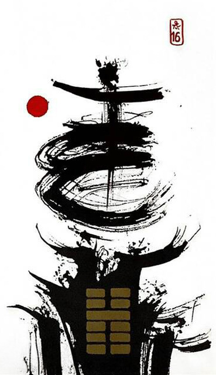

뇌지예
평괘 7
미리 대비하니 기쁨이 따른다
순하게 움직이면 자연히 즐거움이 따른다개구리가 겨울잠에서 깨어나 자유롭게 활동!잔잔한 땅위에 번개가 치는 형국으로 세상이 진동하고활발하게 활동하는 상황을 표현한 그림
열정.열광.즐거움.독특한 창조.변화.영감.긍정적인 반응.자기 표현.확신.공유.희망.기쁨.인기.활력.새로운 시작
연애운
활발하고 적극적인 연애
사업운
길하다(준비되어 있는 상태에서). 새로운 변화, 새롭게 시작.추진
속마음
썸조금 들뜬 기분.아기자기한 마음.즐거운 마음
1년 이상-활발하고 적극적인 마음.열정적인 마음
이별 후긍정적으로 생각하며 빨리 재회 하고 싶은 마음
솔로연애운
여행.클럽등 북적이는 곳에서 만날 가능성 높음
건강운
장기 환자는 좋아진다.피로.과로로 인한 간손상 유의